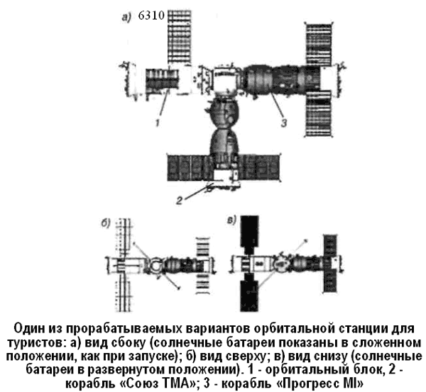

Космический туризм
В настоящее время одним из перспективных направлений создания орбитальных станций считается строительство туристских космических баз.
Когда я пишу эти строки, информационные агентства всего мира сообщают, что из космоса вернулся второй (после Денниса Тито) космический турист — южноафриканский программист-миллионер Марк Шаттлворт. В настоящее время космические туристы летают на Международную космическую станцию, используя свободное место на кораблях «Союз ТМ», которые служат спасательными и нуждаются в периодической замене (их ресурс составляет всего лишь 180 суток). Однако подобные полеты вызывают серьезные возражения у стран-участниц программы «МКС», ведь неизвестно, как поведет себя взятый со стороны турист и не создаст ли он проблем для работников станции. Поэтому становится актуальной проблема создания на орбите базы, нацеленной именно на туризм.
Так, американская компания «Спейс Айленд Груп» («Space Island Group») рассчитывает слить воедино индустрию, коммерцию и туризм, начав в 2004 году строительство первой из серии частных орбитальных станций для отдыха. Они предложат туристам такие развлечения, как танцы и занятия спортом в частичной невесомости, дистанционно управляемые космические прогулки с «орбитальной медитацией» и возможностью «зарядиться энергией прямо от звезд».
Главным конструктивным блоком коммерческих космических станций станет топливный бак, используемый кораблями «Спейс Шаттл». Сейчас отработанные баки остаются в космосе и со временем входят в плотные слои атмосферы, сгорая в ней. Однако в 70-е годы, когда разрабатывалась программа «Шаттл», их предполагалось использовать в качестве строительных блоков для космических станций.
Минимально модифицировав эти баки, их можно снабдить причалами, позволяющими переходить из одного блока в другой. Космонавты подготовят интерьер, сделав эти модули жилыми, и из пустых баков образуется ряд космических станций.
«Спейс Айленд Груп» рассматривает несколько разных способов превращения отработанных топливных баков в жилые модули. Первая конструкция, названная «Джеоуд» («Geode»), превращает бак в многоэтажную башню со спальнями, рабочими кабинетами и складами. «Geode» могла бы стать базовой станцией и хранилищем топлива для больших станций, которые будут называться «Спейс Айленд». Эти станции состояли из 12–16 баков, образующих тор с одним или более баками в центре.
Предполагается, что 99,5 % воздуха, пищи и воды на станциях можно будет утилизировать, а большую часть продуктов — выращивать и производить прямо на месте. В меню космического отеля, вероятно, будут преобладать куриные и рыбные блюда, а вот говядину и свинину придется привозить с Земли.
Круглые станции будут вращаться со скоростью один оборот в минуту, что создаст искусственную силу тяжести примерно в одну треть земной. Этого достаточно, чтобы преодолеть негативное влияние невесомости и испытать новые ощущения. Партнеры по танцам смогут, избавившись от значительной части земного веса, насладиться необыкновенной легкостью в движениях. А представьте себе, что смогут вытворять гимнасты на брусьях при пониженной гравитации!
Хотя в этих условиях, вероятно, возникнут новые виды спорта. Астронавт Баз Олдрин (второй человек, ступивший на поверхность Луны) смотрит на эту проблему еще шире и дальше, планируя создать цепь космических отелей, курсирующих между Землей и Марсом. В проекте Олдрина участвуют специалисты Массачусетского Технологического института, Университета Пурду и Университета Техаса.
В течение 20 лет три специальных космических корабля, перевозящие по 50 пассажиров за один рейс, наладят постоянное транспортное сообщение между двумя планетами и доставят необходимые материалы для основания и жизни марсианской колонии или организации первичных туров.
Для снижения стоимости восьмимесячного путешествия в качестве движущей силы для космических челноков будет использоваться гравитация солнца, планет и их спутников.
Расчетами занимается группа Джеймса Лонгусски, профессора Аэронавтики и Астронавтики Университета Пурду в Индианаполисе. По его словам, однажды «запущенный» отель будет двигаться почти по инерции. Естественно, для торможения и ускорения будут использоваться имеющиеся на сегодняшний день виды топлива, однако основная нагрузка ляжет на гравитационные взаимодействия.
Однако и российские космические корпорации не хотят упустить своего. 24 августа 2001 года Росавиакосмос, РКК «Энергия» имени Королева и компания «МирКорп» («MirCorp») подписали решение, дающее право «МирКорп» искать инвесторов и заказчиков, а РКК «Энергия» — вести разработку коммерческой посещаемой орбитальной станции под условным названием «Мини Стейшн 1» («Mini Station 1»). Подписи под решением поставили генеральный директор Росавиакосмоса Юрий Коптев, президент и генеральный конструктор РКК «Энергия» Юрий Семенов и президент «МирКорп» Джеффри Манбер. Главная цель строительства станции — осуществление коммерческих полетов в космос и проведение экспериментов по заказу государственных организаций и частных фирм.
В «Энергии» еще с начала 70-х годов прорабатывалась концепция автономных модулей, периодически пристыковывающихся к базе-станции для обслуживания, ремонта и установки новой аппаратуры. Прототипами «Мини Стейшен 1» стали проекты таких модулей, создаваемых для орбитальной станции «19К». Из большого числа этих проектов до стадии летно-конструкторских испытаний был доведен лишь автономный астрофизический модуль «19К-А30» («Гамма»).
«МирКорп» планирует создавать станцию совместно с Росавиакосмосом, с НАСА, ЕСА и другими партнерами по «МКС». На сегодняшний момент обсуждаются эскизные проекты компоновки станции.
«Мини Стейшен 1» включает в себя базовый модуль, транспортные корабли «Союз ТМА» и грузовые корабли «Прогресс Ml».
Базовый модуль предполагается запускать на одной из модификаций ракеты «Союз» с космодрома Байконур. В связи с тем, что еще не принято, на какой ракете и с каким обтекателем будет запущен модуль, не ясны и его геометрические размеры, а также массовые характеристики. Диаметр может изменяться от 2,72 до 3,4 метра, масса — от 7 до 10 тонн. Планируется, что рабочий ресурс составит 15 лет, и станция сможет принимать экспедиции длительностью до 20 суток.
Станция будет иметь возможность длительного автономного полета. Для поддержания ее работоспособности понадобится лишь один пилотируемый «Союз ТМА» и один «Прогресс Ml» в год.
Вероятнее всего, цилиндрическую часть базового модуля создадут на основе вдвое укороченного герметичного отсека коммерческого модуля «Энтерпрайз» («Enterprise»), который вскоре войдет в состав «МКС». Аналог переходного отсека, видимо, будет близок к аналогичному отсеку служебного модуля «Звезда». На его сферической части установят осевой и боковой стыковочные узлы. Отсек может использоваться в качестве шлюзовой камеры. Для этого вместо верхнего (зенитного) стыковочного узла будет стоять крышка для выходов в открытый космос. На конической части переходного отсека, соединяющей «шарик» с жилым отсеком, предусмотрены места крепления научной аппаратуры, рассчитанной на работу в условиях открытого космоса.
Для расширения возможностей станции предлагается поставить ориентируемые, а не жестко закрепленные солнечные батареи. Они аналогичны панелям служебного модуля «Звезда», при запуске укладываются вдоль корпуса, а на орбите разворачиваются в рабочее положение. Их площадь по сравнению с батареями кораблей «Союз» и «Прогресс» будет увеличена почти в 2,5 раза, что позволит устанавливать на «Мини Стейшен 1» целевую аппаратуру с большим энергопотреблением

Станцию планируется вывести на орбиту «МКС». Первоначально, по словам Юрия Семенова, предполагалось, что станция сможет совершать как самостоятельный полет, так и пристыковываться к российскому сегменту «МКС». Однако для этого понадобился бы активный стыковочный узел. Его установка сильно осложняла конфигурацию малой станции, увеличивала массу и, главное, лишала возможности стыковать «Прогрессы» на осевой узел. Близкая к «МКС» орбита позволила бы вдвое сократить число изготавливаемых кораблей «Союз». Совмещение орбит позволяет организовывать одновременно посещение «Мини Стейшен» и замену кораблей-спасателей на «МКС». Для этого «Союз» сначала будет пристыковываться к частной станции, оставаться там две или три недели, а затем осуществлять перелет и стыковку к «МКС». Экипаж посещения оставит свой корабль основному экипажу станции, а свои ложементы перенесет в старый корабльспасатель, на котором вернется на Землю. Пересменка займет всего один-два дня и не помешает экипажу «МКС» в его работе.
Запуск «Мини Стейшен 1» на орбиту при наличии инвесторов в необходимом объеме возможен уже через пять лет.
Должностные лица «МирКорп» не объявили стоимость создания станции, однако некоторые космические издания оценивают ее в 100 миллионов долларов.
Космический туризм как новое явление в нашей жизни вызывает противоречивые отклики у профессионалов. Некоторые даже считают, что такой туризм следует запретить, поскольку занятие космическим извозом миллионеров «позорит нашу державу». Мне же представляется, что это еще одна (и хорошая) возможность поддержать «на плаву» российскую пилотируемую космонавтику, которая в настоящее время занимается исключительно обслуживанием «МКС». Тем из профессионалов, кто сомневается в «чистоплотности» космического туризма, советую перечитать на досуге труды пионеров ракетостроения. Циолковский, Цандер и Королев проложили дорогу в космос не для того, чтобы по ней перемещались гордые одиночки, — космос принадлежит всем.